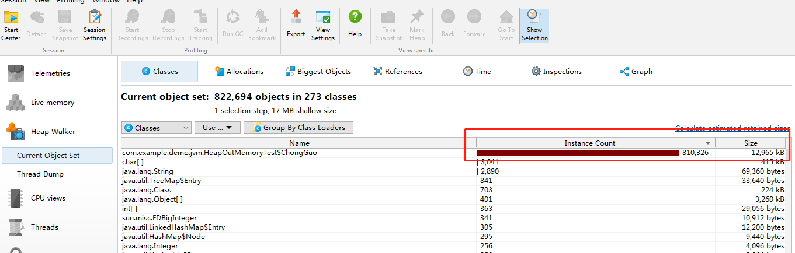
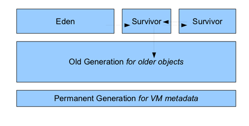
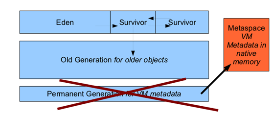

相信很多JAVA中高级的同学在面试的时候会经常碰到一个面试题
你是如何在工作中对JVM调优和排查定位问题的？
事实上，如果用户量不大的情况下，在你的代码还算正常的情况下，在工作中除非真正碰到与JVM相关的问题是少之又少，就算碰到了也是由公司的一些大牛去排查解决，那么我们又如何积累这方面的经验呢？下面由冲锅带大家一起来实践JVM的调优吧
注意我们平常所说的JVM调优一般指Java堆，Java虚拟机栈参数调优
先来一段代码示例，注意笔者用的是IDEA工具，需要配置一下VM options 为-Xms20m -Xmx20m -XX:+HeapDumpOnOutOfMemoryError，如果不清楚的百度一下如何配置idea的JVM运行参数
package com.example.demo.jvm;
import java.util.ArrayList;
import java.util.List;
/**
* @Author: Wang Chong
* @Date: 2019/9/22 9:37
* @Version: V1.0
*/
public class HeapOutMemoryTest {
static class ChongGuo {
}
public static void main(String[] args) {
List<ChongGuo> chongGuos = new ArrayList<>();
while (true) {
chongGuos.add(new ChongGuo());
}
}
}
运行结果如下：
java.lang.OutOfMemoryError: Java heap space
Dumping heap to java_pid9352.hprof ...
Heap dump file created [28701160 bytes in 0.122 secs]
Exception in thread "main" java.lang.OutOfMemoryError: Java heap space
at java.util.Arrays.copyOf(Arrays.java:3210)
at java.util.Arrays.copyOf(Arrays.java:3181)
at java.util.ArrayList.grow(ArrayList.java:261)
at java.util.ArrayList.ensureExplicitCapacity(ArrayList.java:235)
at java.util.ArrayList.ensureCapacityInternal(ArrayList.java:227)
at java.util.ArrayList.add(ArrayList.java:458)
at com.example.demo.jvm.HeapOutMemoryTest.main(HeapOutMemoryTest.java:18)
Disconnected from the target VM, address: '127.0.0.1:54599', transport: 'socket'可以看到控制台出现java.lang.OutOfMemoryError: Java heap space的错误，这是为什么呢，首先先解释一下上面的运行参数
-Xms20m -Xmx20m -XX:+HeapDumpOnOutOfMemoryError
下面我们分析一下出错的原因，用JProfiler分析一下，打开刚才生成的名为java_pid9352.hprof的dump文件。可以看到根据（InstanceXcount和Size）基本可以确定哪个类的对象出现问题,在上面示例中，可以是ChongGuo这个实例生在数量的大小已经超过12M，但没有超过20M，那么新问题又来了？没到20M为啥会报堆内存溢出呢？

答案就是JDK8中堆内存中还包括Metaspace,即元内存空间，在元空间出现前JDK1.7之前在JDK7以及其前期的JDK版本号中。堆内存通常被分为三块区域Nursery内存(young generation)、长时内存(old generation)、永久内存(Permanent Generation for VM Matedata)，如下图

当中最上一层是年轻代，一个对象被创建以后首先被放到年轻代中的Eden内存中，假设存活期超两个Survivor之后就会被转移到长时内存中(Old Generation)中永久内存中存放着对象的方法、变量等元数据信息。通过假设永久内存不够。我们就会得到例如以下错误：java.lang.OutOfMemoryError: PermGen
而在JDK8中情况发生了明显的变化，就是普通情况下你都不会得到这个错误，原因
在于JDK8中把存放元数据中的永久内存从堆内存中移到了本地内存(native memory)
中，JDK8中JVM堆内存结构就变成了例如以下：

如果我启动VM参数加上：-XX:MaxMetaspaceSize=1m，重新运行一下上面的程序，
Connected to the target VM, address: '127.0.0.1:56433', transport: 'socket'
java.lang.OutOfMemoryError: Metaspace
Dumping heap to java_pid9232.hprof ...
Heap dump file created [1604635 bytes in 0.024 secs]
FATAL ERROR in native method: processing of -javaagent failed
Exception in thread "main" Disconnected from the target VM, address: '127.0.0.1:56433', transport: 'socket'
Process finished with exit code 1可以发现报错信息变成了java.lang.OutOfMemoryError: Metaspace,说明元空间不够，我改成到大概4m左右才能满足启动条件。
在Java虚拟机规范中描述了两种异常：
如果虚拟机在扩展栈无法申请到足够的内存空间，则抛出OutOfMemoryError异常
StackOverflowError比较好测试，测试代码如下：
package com.example.demo.jvm;
/**
* @Author: Wang Chong
* @Date: 2019/9/22 19:09
* @Version: V1.0
*/
public class StackOverflowTest {
/**
* 栈大小
*/
private int stackLength = 1;
/**
* 递归压栈
*/
public void stackLeak() {
stackLength++;
stackLeak();
}
public static void main(String[] args) {
StackOverflowTest stackOverflowTest = new StackOverflowTest();
try {
stackOverflowTest.stackLeak();
} catch (Throwable e) {
System.out.println("stack length is :" + stackOverflowTest.stackLength);
throw e;
}
}
}
运行结果如下：
Exception in thread "main" stack length is :20739
java.lang.StackOverflowError
at com.example.demo.jvm.StackOverflowTest.stackLeak(StackOverflowTest.java:20)
at com.example.demo.jvm.StackOverflowTest.stackLeak(StackOverflowTest.java:20)在VM参数-Xss参数未设置的情况下，该线程的内存支持的栈深度为20739，该测试结果与机器的内存大小有关，不过上面的第二点如何测试呢？正常来说如果是单线程，则难以测试内存泄露的情况，那么多线程呢？我们看一下以下测试代码：
package com.example.demo.jvm;
/**
* @Author: Wang Chong
* @Date: 2019/9/22 19:09
* @Version: V1.0
*/
public class StackOOMTest implements Runnable{
/**
* 栈大小
*/
private int stackLength = 1;
/**
* 递归压栈
*/
public void stackLeak() {
stackLength++;
stackLeak();
}
public static void main(String[] args) {
while (true){
StackOOMTest stackOverflowTest = new StackOOMTest();
new Thread(stackOverflowTest).start();
}
}
@Override
public void run() {
stackLeak();
}
}
如果系统不假死的情况下，会出现Exception in thread "main" java.lang.OutOfMemoryError:unable to create new native thread
package com.example.demo.jvm;
import java.util.ArrayList;
import java.util.List;
/**
* @Author: Wang Chong
* @Date: 2019/9/22 19:44
* @Version: V1.0
*/
public class RuntimePoolOOMTest {
public static void main(String[] args) {
List<String> list = new ArrayList<>();
int i = 0;
while (true) {
list.add(String.valueOf(i).intern());
}
}
}
结果如下：
Exception in thread "main" java.lang.OutOfMemoryError: Java heap space
at java.util.Arrays.copyOf(Arrays.java:3210)
at java.util.Arrays.copyOf(Arrays.java:3181)
at java.util.ArrayList.grow(ArrayList.java:261)
at java.util.ArrayList.ensureExplicitCapacity(ArrayList.java:235)
at java.util.ArrayList.ensureCapacityInternal(ArrayList.java:227)
at java.util.ArrayList.add(ArrayList.java:458)
at com.example.demo.jvm.RuntimePoolOOMTest.main(RuntimePoolOOMTest.java:17)
Disconnected from the target VM, address: '127.0.0.1:50253', transport: 'socket'证明字符常量池已经在Java8中是在堆中分配的。
在Java7之前，方法区位于永久代(PermGen)，永久代和堆相互隔离，永久代的大小在启动JVM时可以设置一个固定值，不可变；Java8仍然保留方法区的概念，只不过实现方式不同。取消永久代，方法存放于元空间(Metaspace)，元空间仍然与堆不相连，但与堆共享物理内存，逻辑上可认为在堆中
测试代码如下，为快速看出结果，请加入VM参数-Xms20m -Xmx20m -XX:+HeapDumpOnOutOfMemoryError -XX:MaxMetaspaceSize=10m：
package com.example.demo.jvm;
import org.springframework.cglib.proxy.Enhancer;
import org.springframework.cglib.proxy.MethodInterceptor;
/**
* @Author: Wang Chong
* @Date: 2019/9/22 19:56
* @Version: V1.0
*/
public class MethodAreaOOMTest {
public static void main(String[] args) {
while (true) {
Enhancer enhancer = new Enhancer();
enhancer.setSuperclass(OOMObject.class);
enhancer.setUseCache(false);
enhancer.setCallback((MethodInterceptor) (o, method, objects, methodProxy) -> methodProxy.invokeSuper(o,
objects));
enhancer.create();
}
}
static class OOMObject {
}
}运行结果如下：
java.lang.OutOfMemoryError: Metaspace
Dumping heap to java_pid8816.hprof ...
Heap dump file created [6445908 bytes in 0.039 secs]
Exception in thread "main" org.springframework.cglib.core.CodeGenerationException: java.lang.reflect.InvocationTargetException-->null
at org.springframework.cglib.core.AbstractClassGenerator.generate(AbstractClassGenerator.java:345)
at org.springframework.cglib.proxy.Enhancer.generate(Enhancer.java:492)
at org.springframework.cglib.core.AbstractClassGenerator$ClassLoaderData.get(AbstractClassGenerator.java:114)
at org.springframework.cglib.core.AbstractClassGenerator.create(AbstractClassGenerator.java:291)
at org.springframework.cglib.proxy.Enhancer.createHelper(Enhancer.java:480)
at org.springframework.cglib.proxy.Enhancer.create(Enhancer.java:305)
at com.example.demo.jvm.MethodAreaOOMTest.main(MethodAreaOOMTest.java:19)
Caused by: java.lang.reflect.InvocationTargetException
at sun.reflect.GeneratedMethodAccessor1.invoke(Unknown Source)
at sun.reflect.DelegatingMethodAccessorImpl.invoke(DelegatingMethodAccessorImpl.java:43)
at java.lang.reflect.Method.invoke(Method.java:498)
at org.springframework.cglib.core.ReflectUtils.defineClass(ReflectUtils.java:459)
at org.springframework.cglib.core.AbstractClassGenerator.generate(AbstractClassGenerator.java:336)
... 6 more
Caused by: java.lang.OutOfMemoryError: Metaspace
at java.lang.ClassLoader.defineClass1(Native Method)
at java.lang.ClassLoader.defineClass(ClassLoader.java:763)
... 11 more
Process finished with exit code 1元空间内存报错，证明方法区的溢出与元空间相关。
总结如下：
有更多的文章，请关注查看，更有面试宝典相送